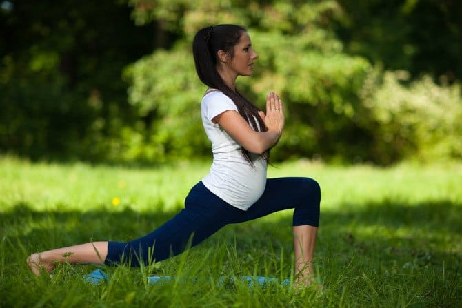

16 Oktober 2019



Hamil seharusnya menjadi momen paling indah bagi wanita. Namun, pasti ada saja masalah yang akan ditemui ibu hamil sepanjang 9 bulan mengandung. Nah, 1o masalah di bawah ini terutama paling sering dialami oleh ibu saat hamil muda. Penasaran?
Saat hamil, Bunda mungkin merasa kesulitan untuk berolahraga karena kondisi perut yang semakin besar. Namun, ada pilihan olahraga ibu hamil yang aman dan dapat membantu saat persalinan normal nanti.
1. Jongkok Berdiri

Berjongkok kemudian berdiri lalu diulang kembali adalah cara melakukan squat. Olahraga ibu hamil yang satu ini dianggap sebagai olahraga paling aman yang bisa dilakukan bahkan oleh Bunda yang tengah hamil tua untuk menyiapkan tubuhnya menghadapi persalinan.
Squat membantu menguatkan otot panggul Bunda menjadi lebih baik dan mendorong bayi agar turun lebih rendah. Agar persalinan normal berjalan lancar, lakukan squat mendekati waktu perkiraan lahir.
Cara melakukan Squat :
Berdiri dengan kaki dilebarkan, kemudian turun perlahan hingga posisi
jongkok dengan punggung tetap tegak seperti saat berdiri. Tahan posisi
ini selama 30 detik, kemudian berdiri lagi tanpa bantuan tangan.
Ulangi prosesnya selama 10-20 menit setiap hari untuk membantu
mengurangi sakit punggung saat hamil.
2. Berjalan Kaki

Berjalan kaki memiliki banyak manfaat bagi ibu hamil. Olahraga yang sangat
mudah dilakukan ini ternyata bisa mendorong kontraksi secara alami.
Ketika Bunda sudah mulai mengalami kontraksi, berjalan kaki dengan tegak
bisa membantu bayi berada dalam posisi ideal untuk lahir.
 Mengungkapkan hubungan tekanan darah tinggi dan sakit gigi
Mengungkapkan hubungan tekanan darah tinggi dan sakit gigi
Mengungkapkan hubungan tekanan darah tinggi dan sakit gigi
Mengungkapkan hubungan tekanan darah tinggi dan sakit gigi
Mengungkapkan hubungan tekanan darah tinggi dan sakit gigi
Mengungkapkan hubungan tekanan darah tinggi dan sakit gigi
Mengungkapkan hubungan tekanan darah tinggi dan sakit gigi
Mengungkapkan hubungan tekanan darah tinggi dan sakit gigi
Mengungkapkan hubungan tekanan darah tinggi dan sakit gigi
Mengungkapkan hubungan tekanan darah tinggi dan sakit gigi

 2019 LIANUS Corporation. All right reserved.
2019 LIANUS Corporation. All right reserved.